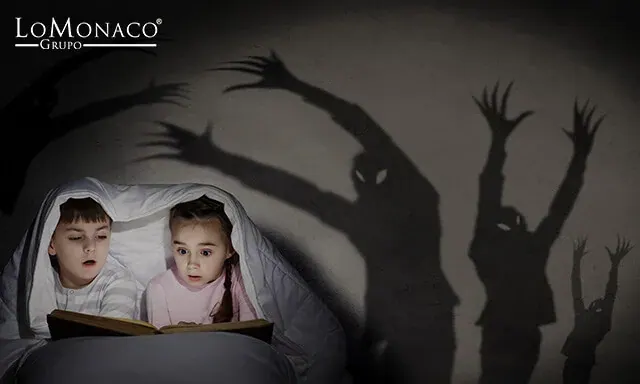

Pesadillas nocturnas: causas de los malos sueños

Pesadillas nocturnas: causas de los malos sueños
Es habitual preguntarse el por qué sueño cosas feas. De todos modos las pesadillas más comunes y las ocasionales no suponen un problema en sí mismas, lo preocupante son las pesadillas recurrentes que interfieren el sueño cotidiano y merman el descanso con la consiguiente incidencia en el desempeño diario.
Las pesadillas nocturnas son sueños con un contenido tremendamente desagradable y real, que causan gran malestar y angustia a la persona que los experimenta, incluso una vez ha conseguido despertarse.
Significado de las pesadillas
Las pesadillas están definidas como parasomnias, se consideran trastornos de conducta durante la fase REM, sin que se produzca una interrupción del curso del sueño ni supongan un trastorno del sueño en si mismas. Resulta sorprendente que durante la propia pesadilla, el durmiente experimenta un leve estado muy particular de activación vegetativa, igual a cuando estamos pasando por una situación de miedo durante la vigilia: se acelera el pulso, la sudoración aumenta, tenemos dificultad para respirar… No debemos confundir las pesadillas nocturnas con los terrores nocturnos ya que se diferencian tanto biológica, como psicológicamente en varios aspectos: fundamentalmente en que los terrores se producen en la fase NO REM (no son sueños) y el durmiente no recuerda nada del episodio al despertar.

Antes de avanzar en por qué tengo sueños malos, deberíamos responder a una pregunta
¿Qué son los sueños y por qué soñamos?
Existen diferentes hipótesis que podrían dar respuesta a porque cada noche soñamos:
Hipótesis clínico anatómica del sueño: Los sueños se originan a partir de la estimulación del entorno que esté el cerebro y recuerdos que tenemos almacenados. Serían serían pensamientos que resultan peculiares porque no actúa la censura sobre ellos. Durante el sueño, la corteza motora ( que controla el movimiento) y la corteza prefrontal del cerebro (controla la coordinación de pensamiento), están desactivadas, sin embargo la actividad en el hipotálamo está a pleno rendimiento y este área rige las emociones, por eso nuestros sueños no están exentos de este tipo de sentimientos.
Hipotésis de activación – síntesis: Esta teoría, formulada por Hobson y McCarley, indica que la actividad neuronal creada por las ondas que se originan en nuestro cerebro durante el sueño, hace que nuestra corteza prefrontal quiera dar una interpretación a la información y aglutina toda la estimulación creando historias sin sentido.
¿Por qué sueño cosas malas?
Las pesadillas, como actividad onírica que son, se producen por mecanismos similares a los descritos. Pero toda la temática que nos causa tanta desazón, debe provenir de algún funcionamiento anómalo, ya que todas las noches no sufrimos pesadillas. En ocasiones, puede estar ocasionado por trastornos mentales. Por lo general, puede estar motivada por épocas en las que estemos pasando estrés o ansiedad, por problemas digestivos (por ejemplo cenas copiosas), fiebre o enfermedades,
Además recordamos que las condiciones ambientales a la hora de dormir, influyen en el contenido de los sueños, así como en el tipo de pesadillas: excesivo calor o frío, ruidos molestos, una iluminación no adecuada o un equipo de descanso que no reúna las condiciones de firmeza y confort, pueden hacer que un sueño agradable, se convierta en la peor de las pesadillas.
Por otro lado, parece ser que a ciertas edades somos más susceptibles de sufrir malos sueños, por ejemplo las pesadillas en niños suelen ser más frecuentes, puede ser porque son más fácilmente impresionables y son más vulnerables a padecer este fenómeno.
Tratamiento para las pesadillas en adultos
Una vez hemos comentado el por qué tengo pesadillas constantes, es el momento de ver cómo resolvemos este problema. Existen varias maneras de abordar el tema y tratar de evitar las pesadillas que se repiten una noche tras otra, que se denominan recurrentes. Pueden ser tratadas desde varios enfoques de la psicología clínica, con diferentes tipos de resultados finales. Existe una técnica sobre la que más se ha trabajado y que ha resultado más eficaz: la técnica de modificación de contenido del sueño. En ella se aborda el tema en varias fases, en una primera fase con el paciente, se analiza la importancia del buen sueño y se le informa en qué consiste el trastorno de pesadillas. Posteriormente en una segunda fase se procede al entrenamiento en pensamiento positivo y se trabaja en finales alternativos para esos malos sueños que se repiten.
En cualquier caso mantener buenas condiciones ambientales de la estancia donde se duerme, vigilar la alimentación, un buen equipo de descanso y en definitiva cuidar todos los aspectos que conforman la higiene del sueño, son una apuesta segura para alejar las pesadillas de nuestro sueño y conseguir un descanso de calidad.